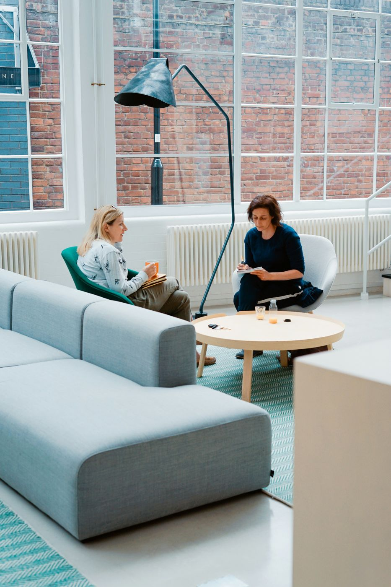
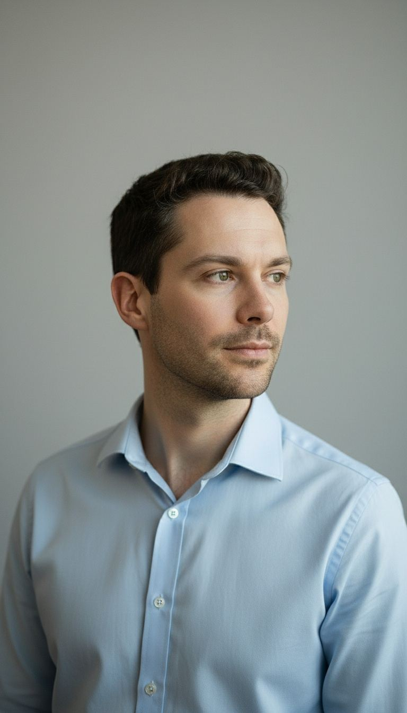

Un consultant qui descend du piédestal
Gomand Consult est né d'une conviction simple : les PME méritent le même niveau d'expertise marketing que les grandes entreprises, sans le jargon, sans la distance, et sans devoir recruter un CMO à temps plein.

Transformer les défis en opportunités concrètes
Aider les PME, indépendants et start-up à transformer leurs défis marketing en opportunités de croissance concrètes, grâce à un accompagnement personnalisé, flexible et orienté résultats.
Le partenaire marketing de référence en Wallonie
Devenir la référence pour les petites structures wallonnes — celui qu'on recommande pour sa rigueur, son écoute et son impact mesurable.

Anthony Gomand
J'ai passé plus de dix ans à observer un même schéma se répéter : des dirigeants de PME brillants dans leur métier, mais qui perdent un temps précieux — et souvent de l'argent — à naviguer seuls dans le marketing. Pas par manque de volonté, mais parce que personne ne leur avait jamais expliqué les choses simplement.
C'est pour ça que j'ai fondé Gomand Consult. Pas pour empiler des livrables ou vendre des heures, mais pour m'asseoir à côté de vous, comprendre vraiment votre business, et construire quelque chose qui tient dans le temps. Certifié en Brand Management (University of London) et Digital Marketing (University of Illinois), bilingue français/anglais, je reste avant tout quelqu'un qui préfère une conversation franche autour d'un café à une présentation PowerPoint.
Si vous cherchez un partenaire qui vous parle cash, qui challenge vos idées autant qu'il les soutient, et qui ne vous fera jamais sentir que vous auriez dû "déjà savoir" — on va bien s'entendre.
Écoute active
Chaque client est unique — les solutions aussi. Jamais de copier-coller d'une mission à l'autre.
Transparence totale
Tarifs clairs, suivi accessible, communication directe. Pas de zones d'ombre.
Qualité sans compromis
Je préfère refuser une mission que livrer un travail moyen. C'est non négociable.
Discutons de votre situation
Un premier échange sans pression, pour comprendre votre business avant de parler solutions.